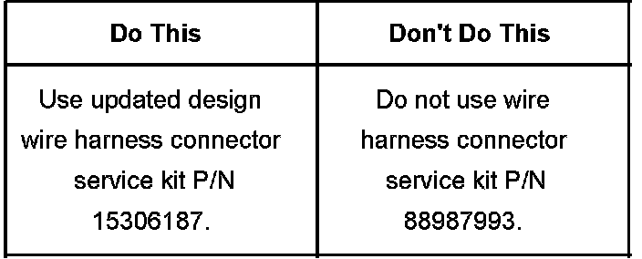
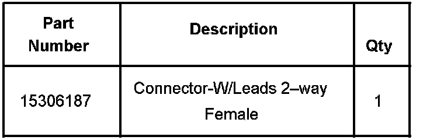

Drivetrain - Updated Transfer Case Speed Sensor Conn.
Bulletin No.: 06-04-21-001Date: May 17, 2006
INFORMATION
Subject:
Updated Transfer Case Connector Service Kit Now Available For Transfer Case Speed Sensor Wire Harness Connector that Comes Loose Or Connector Retainer Clip Breaks
Models:
2007 and Prior GM Light Duty Trucks
2007 and Prior HUMMER H2, H3
2005-2007 Saab 9-7X
with Four-Wheel Drive or All-Wheel Drive
Technicians may find that when the transfer case speed sensor wire harness connector is removed, the connector lock flexes/bends and does not return to the original position. The transfer case speed sensor wire harness connector then has no locking device. On older vehicles, the plastic connector retainer becomes brittle and the clip may break as soon as it is flexed. In the past, the only service fix was to install a wire harness connector service pack, P/N 88987183. This repair procedure involved splicing a new service connector with an integral connector lock. This connector service kit is of the same design and was still prone to failure over time.

A new connector service repair kit is now available, P/N 15306187, that is an updated design. This new kit should be used whenever the speed sensor wire harness connector requires replacement.

Parts Information

Disclaimer